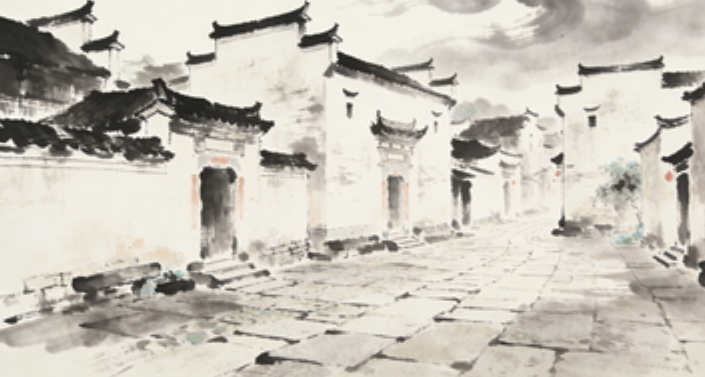
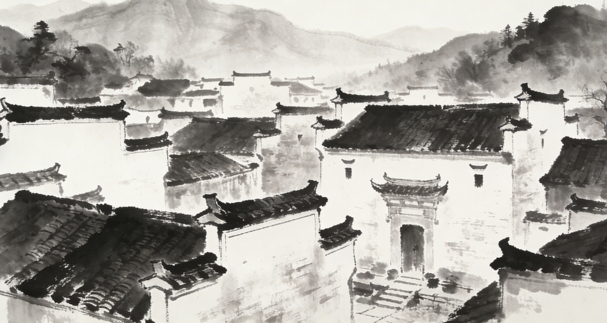
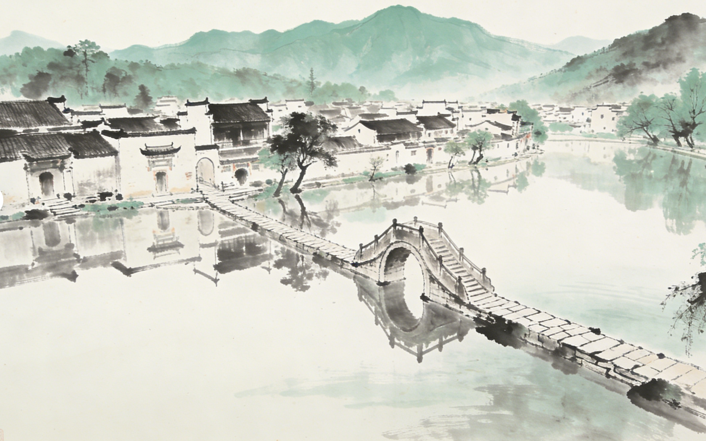

宏村位于安徽省黄山市黟县，始建于南宋年间，是汪氏家族的聚居地。村落背倚雷岗山，整个布局以独特的"牛形"仿生学设计闻名，村口的古树为"牛角"，蜿蜒的水圳为"牛肠"，汇聚于中心的月沼形成"牛胃"，再延伸至南湖作为"牛肚"，构成了一套科学且至今仍在发挥作用的人工水系，因此被誉为"中国画里的乡村"。

宏村保存了140余幢明清时期的古建筑，是徽派建筑艺术的集中展示地。其中，明代汪氏宗祠乐叙堂、被誉为"民间故宫"的清代盐商宅邸承志堂以及南湖书院是其杰出代表。这些建筑集徽州砖雕、石雕、木雕"三雕"艺术之大成，粉墙黛瓦、马头墙与天井院落相映成趣，生动展现了徽商文化与工匠精神。

凭借其独特的村落规划、保存完好的古建筑群以及与自然和谐共存的典范价值，宏村于2000年被联合国教科文组织列入世界文化遗产，评价其为"人类古老文明的见证，传统建筑的典型作品"。此外，它还拥有全国重点文物保护单位、中国历史文化名村等多项顶级遗产头衔，其成功的保护模式实现了文化遗产的永续利用。